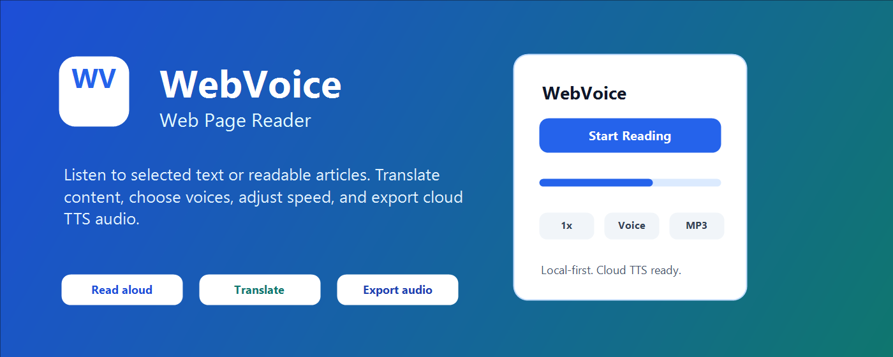

Clean pages before listening
Preview extracted headings, paragraphs, lists, quotes, code, and tables. Remove noise before playback starts.
A calmer way to listen on the web
Turn busy pages into focused reading views, keep original text beside a translation, and listen with local voices or your configured cloud provider.

Built for real reading
Use the same workflow for a news article, a documentation page, a forum post, or a local book file.
Preview extracted headings, paragraphs, lists, quotes, code, and tables. Remove noise before playback starts.
Keep the selected-text workflow when you need precision, or extract the main article when the page is long.
When the target language differs, compare both columns while the current sentence or paragraph stays in view.
Open EPUB, TXT, HTML, and Markdown files in a temporary book reader with chapters and local processing.
Pause, jump by paragraph, adjust speed, copy cleaned text, and let the reading view follow the current sentence.
Start with browser or system voices. Pro can use supported cloud TTS and download generated audio.
A simple workflow
Cleaning is temporary and page-specific. It does not rewrite the source page or create a site-wide rule.
Select text, extract the article, use visible text, or open a local book file.
Keep or remove blocks, decide whether headings and author details should be spoken, and copy either column.
Read locally or translate first, then use the in-page player to pause, jump, and resume.
In the extension


Pricing
The free plan keeps local reading available. Pro adds supported cloud workflows and downloadable audio.
For local reading in Chrome
A 7-day trial is available only on checkout links that show it.
A one-time purchase for the current Pro feature set
FAQ
Install WebVoice and try local reading for free.
Add to Chrome - Free